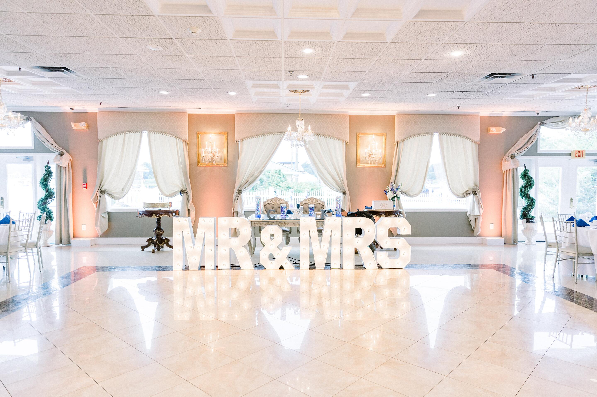
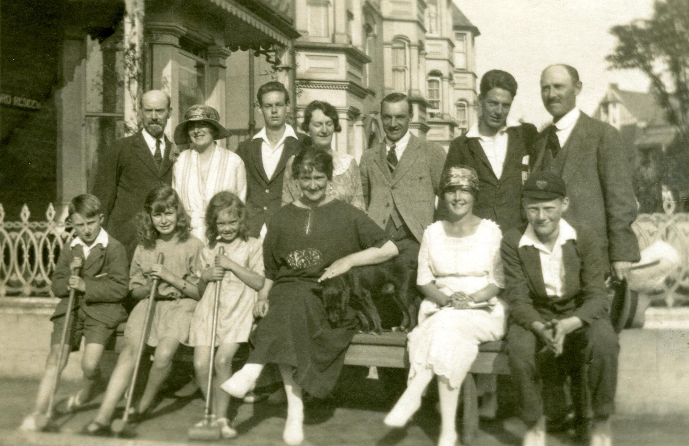
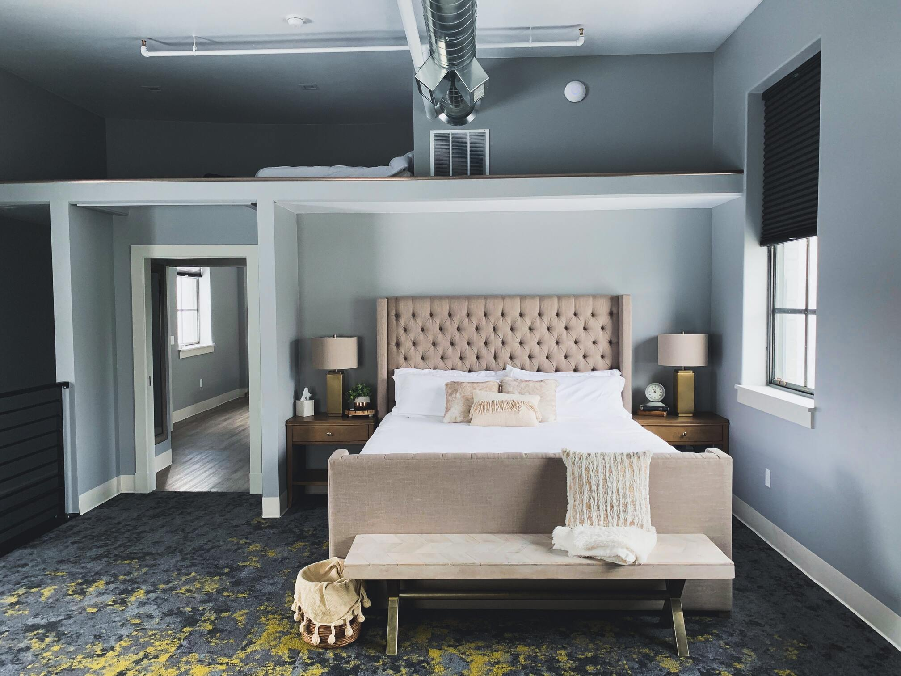

- Free access to changing rooms and bathroom facilities
for temple patrons who have traveled far and need to change to and from church
clothes
- A playroom and low cost, short-term babysitting
services for the children of patrons
- Long term stay accomodations in kitchenette suites
for full-time temple missionaries
- Temple history themed reception and sitting
area
- A wedding reception hall that can be easily
customized with a simple catering menu and kitchen access for food preparation and
serving
- A family search center that supports family search
and ordinance work
Book our Reception Hall:

- Breakfast
- Exercise/workout room
- Indoor pool
- Parking
- Temple shuttle
- Wifi high-speed internet access and smart
TVs
- Family history consultation and family ordinance
card service

View our Suites:
